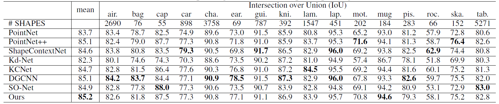
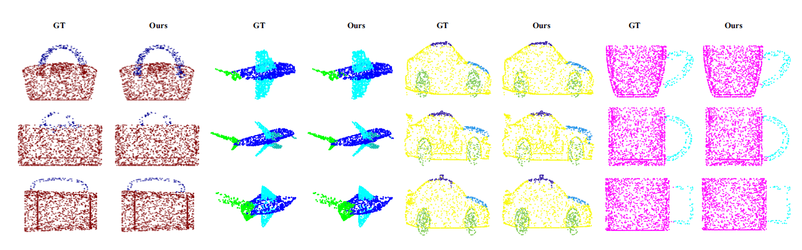

Point2Sequence: Learning the Shape Representation of 3D Point Clouds with an Attention-based Sequence to Sequence Network
School of Software, Tsinghua University, Beijing, China

Figure 1: The framework of Point2Sequence.
Exploring contextual information in the local region is important for shape understanding and analysis. Existing studies often employ hand-crafted or explicit ways to encode contextual information of local regions. However, it is hard to capture fine-grained contextual information in hand-crafted or explicit manners, such as the correlation between different areas in a local region, which limits the discriminative ability of learned features. To resolve this issue, we propose a novel deep learning model for 3D point clouds, named Point2Sequence, to learn 3D shape features by capturing fine-grained contextual information in a novel implicit way. Point2Sequence employs a novel sequence learning model for point clouds to capture the correlations by aggregating multi-scale areas of each local region with attention. Specifically, Point2Sequence first learns the feature of each area scale in a local region. Then, it captures the correlation between area scales in the process of aggregating all area scales using a recurrent neural network (RNN) based encoder-decoder structure, where an attention mechanism is proposed to highlight the importance of different area scales. Experimental results show that Point2Sequence achieves state-of-the-art performance in shape classification and segmentation tasks.
{kind=link}
Figure 2: ModelNet classification result.
{kind=link}
Figure 3: ShapeNet segmentation result.
{kind=link}
Figure 4: Visualization of segmentation on ShapeNet.
Xinhai Liu, Zhizhong Han, Yu-Shen Liu, Matthias Zwicker. Point2Sequence: Learning the Shape Representation of 3D Point Clouds with an Attention-based Sequence to Sequence Network. AAAI, 2019.
Xinhai Liu, Email address: lxh17@mails.tsinghua.edu.cn.